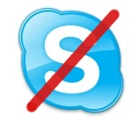

21 août 2007
Ce matin j’ai vu :
- un serveur du Balzar qui était un vrai cliché avec son costume noir&blanc et sa petite moustache retroussée ; je me demande comment il s’habille en dehors du travail, s’il parvient à s’extraire de l’emprise du déguisement ou s’il vit dans un décor du siècle dernier ;
- une femme qui est venue s’asseoir à côté de moi, et dont l’odeur était un mélange de vieux slip, de cire et de placard moisi ; avec l’alcoolo qui était assis derrière moi et qui dégageait plus d’effluves qu’une barrique de beaujolais, j’ai cru que j’allais vomir ;
- deux étudiants en histoire qui en passant devant l’Assemblée Nationale dissertaient sur la taille des fraises et autres cols à travers les âges et sur le fait que Sully ne suivait pas trop la mode.
21 août 2007

Niels Bohr, prix nobel de physique en 1922, disait qu’« un expert est une personne qui a fait toutes les erreurs possibles dans un domaine très restreint. » Tant qu’à faire, si on peut apprendre des erreurs des autres, c’est peut-être un peu moins efficace mais certainement aussi beaucoup moins douloureux.
En l’occurrence, vous savez sans doute que le réseau Skype a connu les 16 et 17 août derniers une panne qui a privé de téléphone 220 millions d’utilisateurs pendant 2 jours (à relativiser tout de même, la plupart de ces utilisateurs enregistrés utilisant d’autres moyens de communication). Villu Arak a publié hier sur le blog de Skype ce billet qui revient sur l’autopsie de l’incident.
20 août 2007
Au dernier épisode nous avons vu, une fois une action choisie dans la todo list, comment mettre en place les conditions pour l’accomplir efficacement.
Mais quid si le choix de l’action lui-même dure plus de 30 secondes ? Ça n’arrivera que si votre liste d’actions est très longue. Avec une liste d’une dizaine d’actions l’identification de l’action suivante ne peut être que rapide et gérer un système de corbeilles multiples et de contextes serait une pure perte de temps.
20 août 2007
Vélib, comme une main tendue vers les zones les plus reculées ? Alors que d’aucuns banlieusards grincheux pestent contre l’absence de stations de l’autre côté du périphérique, les stations mobiles s’évadent vers les steppes les plus reculées. S’agit-il de l’Atlas, des Andes, de l’Afghanistan ? Mystère… En tout cas ils ont dû sacrément pédaler pour arriver là !

Le lien : http://www.velib.paris.fr/service/viewstation/901
En fait les stations 901, 902, 904, 11011, 14107, et 14108 ne sont pas géolocalisées.
19 août 2007
Vous avez des envies soudaines de bonbons, d’alcool, ou de mâcher des glaçons ? Le tableau suivant, traduit depuis Naturopathyworks (oui, j’ai des lectures éclectiques !), vous dit ce que votre corps vous réclame vraiment et comment lui apporter de façon plus saine :
| Envie de… |
En fait vous avez besoin de |
Et vous pouvez le trouver là |
| Chocolat |
Magnésium |
Noix, graines, légumes et fruits crus |
| Bonbons |
Chrome |
Broccoli, raisins, fromage, haricots séchés, foie de veau, poulet |
|
Carbone |
Fruits frais |
|
Phosphore |
Poulet, boeuf, foie, volaille, poisson, oeufs, laitages, noix, légumes, graines |
19 août 2007
Dans son livre The 4-hour workweek, en tête des ventes du New York Times dans la catégorie Business au début du mois, Tim Ferris recommande aux entrepreneurs de virer les clients pour lesquels le rapport gains/efforts est le plus faible : en application de la loi de Pareto (ou loi des 80/20), 20% des clients représentent en effet 80% du chiffre d’affaires. Et 20%, pas nécessairement les mêmes justement, représentent 80% des réclamations, de l’insatisfaction, et au final du stress pour l’entreprise.
18 août 2007
Depuis le début de cette série sur une utilisation productive de l’email, nous avons vu comment passer de l’inconfort d’une Inbox pleine et d’un classement fastidieux à la simplicité d’une Inbox vide, d’un unique répertoire d’archives, et d’une liste d’actions.
À retenir
S’il n’y avait qu’une idée à garder, ce serait de ne s’intéresser parmi les dizaines de mails quotidiens qu’à ce qui est actionnable. Le reste c’est soit du vent soit de l’information qui doit être archivée et qui pourra resservir plus tard.
18 août 2007

Vous vous souvenez peut-être de cette expérience de chimie faite au lycée où l’on mélangeait du luminol (3-aminophthalhydrazide), de l’hydroxyde de sodium (NaOH) et de l’eau de javel, ce qui dégageait une lumière bleutée du plus bel effet…
Eh bien le site DIYlife explique comment faire ça très simplement avec des ingrédients courants : têtes d’allumettes, eau de javel (bleach en Anglais) et eau oxygénée (hydrogene peroxide). Et leur idée d’injecter ça dans une tomate à l’aide de seringues est vraiment magnifique !
17 août 2007

Si vous avez suivi le billet d’hier, vous n’avez plus qu’un sous-dossier dans votre Inbox, Archive, ce qui en plus du temps de classement gagné est assez relaxant : si ce n’est pas là, pas la peine de chercher ailleurs.
Maintenant, votre Inbox déborde toujours : il y a 200 mails dedans, dont 150 non lus et 50 qui sont des discussions en cours, ou bien des actions que vous ferez plus tard, quand vous aurez le temps, mais vu qu’il y a 150 mails non lus et qu’il arrive 10 nouveaux mails chaque heure ce n’est pas pour aujourd’hui !
17 août 2007
Ouf, ayé ! J’ai envoyé mon dossier le 16 juillet, j’ai reçu ma confirmation d’inscription le 3 août, et le 17 août mon passe Navigo est enfin activé ! J’avais pourtant bien précisé mon numéro Navigo lors de l’inscription, puis comme il était vide je l’avais re-rentré après avoir reçu la confirmation. Et finalement il aura suffi d’un appel à la hotline pour que ce soit réglé en deux minutes.